1. Introduction
1.1 Language model
什么是语言模型？
语言模型是指衡量一句话（词组合）出现的概率或合理性，即判断一个人有多大概率会讲出一句话。
\[P(W) = P(w_1, w_2, \dots, w_n)\]
链式法则
训练语言模型时会遵循 链式法则，即：
\[
\begin{align*}
P(A, B) &= P(A)P(B|A) \\
P(x_1, x_2, x_3, \dots, x_n) &= P(x_1)P(x_2|x_1)P(x_3|x_1, x_2)\dots P(x_n|x_1,\dots,x_{n-1})
\end{align*}
\]
应用到语言模型中，有：
\[
\begin{array}{c}
\mathrm{P}(\mathrm{W})=\mathrm{P}\left(w_{1}, w_{2}, w_{3}, w_{4}, w_{5} \ldots w_{n}\right) \\
P\left(w_{1} w_{2} \ldots w_{n}\right)=\prod_\limits{i} P\left(w_{i} \mid w_{1} w_{2} \ldots w_{i-1}\right)
\end{array}
\]
Markov 假设
每个单词只跟它之前 \(n\) 个单词有关。
Evaluation of language model
\[
\begin{aligned}
P P(W) &=P\left(w_{1} w_{2} \ldots w_{N}\right)^{-\frac{1}{N}} \\
&=\sqrt[N]{\frac{\cdots}{P\left(w_{1} w_{2} \ldots w_{N}\right)}} \\
&=\sqrt[N]{\prod_{i=1}^{N} \frac{1}{P\left(w_{i} \mid w_{1} \ldots w_{i-1}\right)}}
\end{aligned}
\]
1.2 Recurrent Neural Network
可以用循环神经网络训练语言模型，每一个单词都是前一个单词的训练时的输出结果。
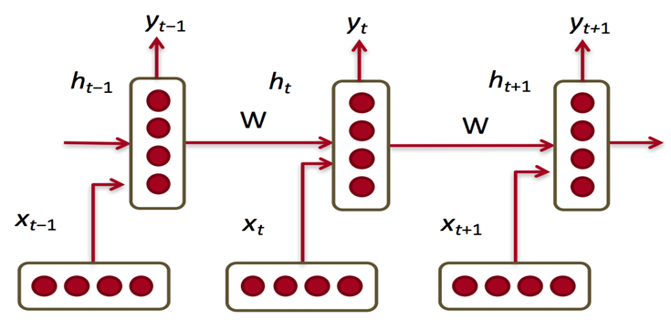
- 每一步的参数 \(W\) 是固定的
- 当前隐状态包含了所有前面出现的单词信息。
Steps: 1. 给定一列词向量
\[x_1, \dots, x_{t-1}, x_t, x_{t+1}, \dots, x_T\]
RNN 每一个步骤
\[
\begin{align*}
h_t &= \sigma\left(W^{(hh)} h_{t-1} + W^{(hx)} x_{[t]} \right) \\
\hat{y_t} &= \mathrm{softmax} \left(W^{(S)} h_t \right)
\end{align*}
\]
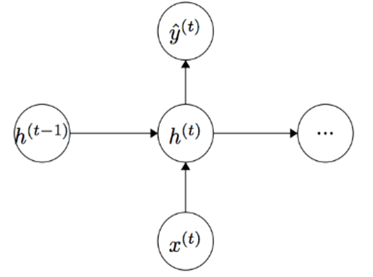
- Loss function (Cross Entropy)
\[J^{(t)}(\theta)=-\sum_{j=1}^{|V|} y_{t, j} \log \hat{y}_{t, j}\]
- 梯度下降 (
SGD, Adam, RMSprop)
\[\begin{array}{l}
J=-\frac{1}{T} \sum_\limits{t=1}^{T} \sum_\limits{j=1}^{|V|} y_{t, j} \log \hat{y}_{t, j}\\
\text { Perplexity: } 2^{J}
\end{array}\]
然而，在实际训练 RNN 过程中，存在许多问题，如： - Gradient vanishing and explosion
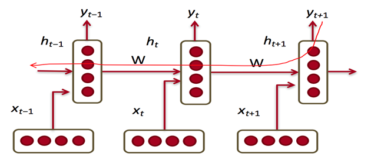
根据反向传播（链式法则），梯度会不断相乘，很容易导致梯度消失或梯度爆炸问题。
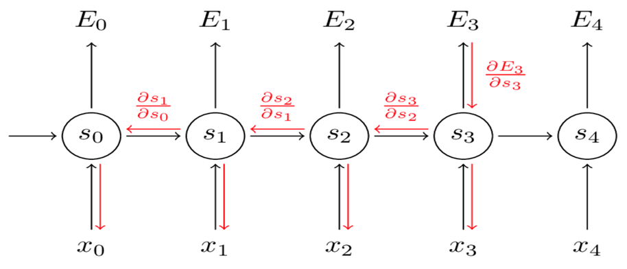
其导数会不断叠加：
\[\frac{\partial E_{3}}{\partial W}=\sum_{k=0}^{3} \frac{\partial E_{3}}{\partial \hat{y}_{3}} \frac{\partial \hat{y}_{3}}{\partial s_{3}}\left(\prod_{j=k+1}^{3} \frac{\partial s_{j}}{\partial s_{j-1}}\right) \frac{\partial s_{k}}{\partial W}\]
1.3 Long Short-term Memory
1.3.1 Comparison between RNN and LSTM
为了应对上述普通 RNN 存在的不足，学者 Hochreiter and Schmidhuber (1997) 提出了新的循环神经网络 Long Short-term Memory。
LSTM 是 RNN 的一种，大体结构几乎一样，区别是： 1. 它的“记忆细胞”改造过； 2. 需要记忆的信息会一直传递，不该记忆的信息会被“遗忘门”截断。
RNN 记忆细胞
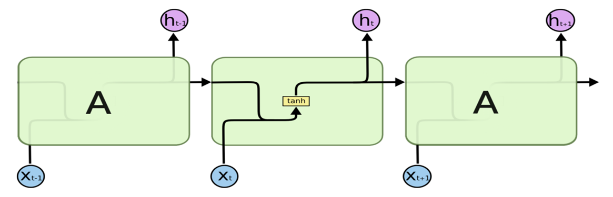
LSTM 记忆细胞
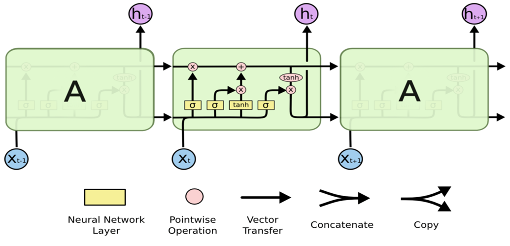
1.3.2 Implementation steps of LSTM
LSTM 关键：“细胞状态”
- 细胞状态类似于传送带。直接在整个链上运行，只有一些少量的线性交互。信息在上面流传保持不变会很容易。
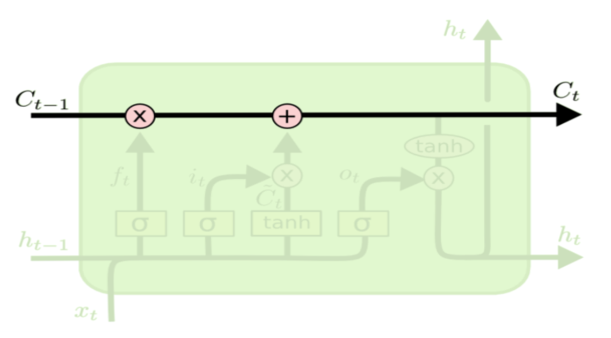
LSTM 如何控制“细胞状态”？
- 通过“门”让信息选择性通过，来去除或者增加信息到细胞状态
- 包含一个
Sigmoid 神经网络从和一个 pointwise 乘法操作
Sigmoid 层输出 0 到 1 之间的概率值，描述每个部分有多少量可以通过。0 表示“不允许任何信息通过”，1 表示“允许所有信息通过”。

Steps:
遗忘门：决定从“细胞状态”中丢弃什么信息
比如在完形填空中填“他”或者“她”的问题，细胞状态可能包含当前主语的类别，当我们看到新的代词，我们希望忘记旧的代词。
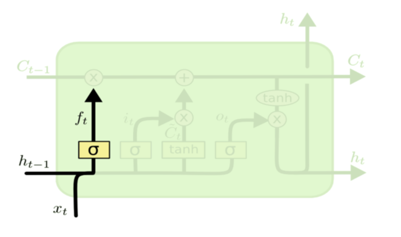
衰减系数计算公式：
\[f_t = \sigma \left( W_f \cdot \left[h_{t-1}, x_t \right] + b_f\right)\]
在 \(t-1\) 时刻，网络输出的 \(h_{t-1}\) 和这一步的网络输入 \(x_t\) 结合起来，然后作用线性变换 \(W_f \cdot \left[h_{t-1}, x_t \right] + b_f\)，最后再经过 Sigmoid 激活函数，将结果映射到 0~1作为记忆（细胞状态）的衰减系数，记作 \(f_t\)。
可以看到网络具体要保留多少记忆是由前一刻的输出和这一时刻的输入共同决定的。
纳入新的信息到“细胞状态”
Sigmoid 层决定什么值需要更新Tanh 层创建一个新的候选值向量 \(\tilde{C}_t\)- 上述 2 步为状态更新做准备
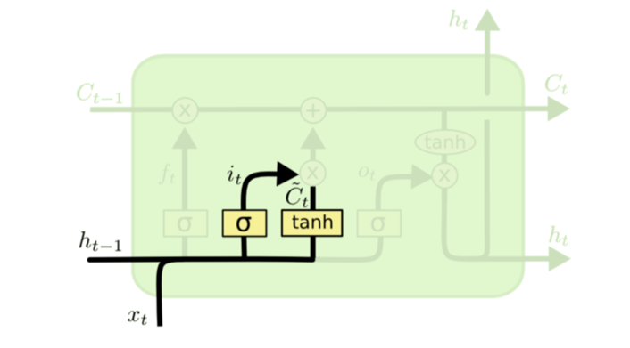
该时刻学习的记忆的衰减系数和被记忆的信息计算公式：
\[
\begin{align*}
i_t &= \sigma \left( W_i \cdot \left[h_{t-1}, x_t \right] + b_i\right) \\
\tilde{C}_t &= \tanh \left( W_C \cdot \left[ h_{t-1}, x_t\right] + b_C\right)
\end{align*}
\]
首先对该时刻学到的记忆应用一个衰减系数，这个系数应用跟上一步的方式相同，再使用线性变换，然后使用 Sigmoid 激活函数，将结果映射到 0~1 之间，这个结果作为当前学习到的记忆的衰减系数，基座 \(i_t\)。当前学习到的记忆 \(\tilde{C}_t\) 是通过变换 \(W_C \cdot \left[ h_{t-1}, x_t\right] + b_C\) 和 \(\tanh\) 激活函数得到的。
更新“细胞状态”
- 更新 \(C_{t-1}\) 为 \(C_t\)
- 把旧状态与 \(f_t\) 相乘，丢弃掉我们确定需要的丢弃的信息
- 加上 \(i_t * C_t\)。这就是新的候选值，根据我们决定更新每个状态的程度进行变化。
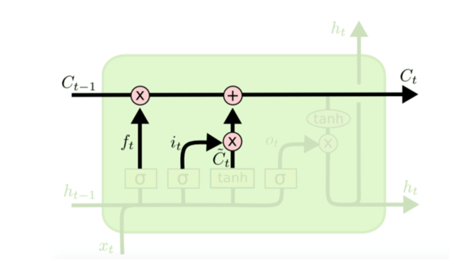
更新的计算公式如下：
\[f_t = \sigma \left( W_f \cdot \left[h_{t-1}, x_t \right] + b_f\right)\]
将 \(t-1\) 时刻的衰减系数 \(f_t\) 乘以 \(t-1\) 时刻的记忆 \(C_{t-1}\)，加上该时刻 \(t\) 下学到的记忆 \(\tilde{C}_t\) 乘以它对应的衰减系数 \(i_t\)，这样便得到了 \(t\) 时刻下的记忆状态 \(C_t\)。
输出门：基于“细胞状态”得到输出
- 首先运行一个
Sigmoid 层来确定细胞状态的哪个部分将输出
- 接着用 \(\tanh\) 来处理细胞状态（得到一个再 -1 到 1 之间的值），再将它和
Sigmoid 的输出相乘，输出我们确定输出的那部分
- 比如我们可能需要单复数信息来确定输出“她”还是“她们”
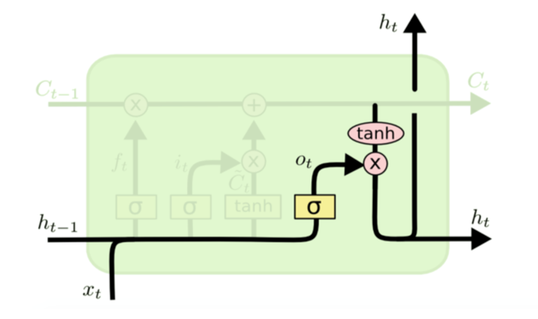
当前时刻 \(t\) 的网络输出 \(h_t\) 取决于当前时刻 \(t\) 的记忆状态 \(C_t\) 和 \(t\) 时刻的输入 \(x_t\)、\(t-1\) 时刻的输出 \(h_{t-1}\)。具体计算公式如下：
\[
\begin{align*}
o_t &= \sigma \left( W_o \cdot \left[h_{t-1}, x_t \right] + b_o\right) \\
h_t &= o_t * \tanh(C_t)
\end{align*}
\]
首先使用类似于计算记忆衰减系数的方法计算得到输出们的系数 \(o_t\)，这个系数决定输出的多少，最后网络的输出由 \(h_t = o_t \times \tanh (C_t)\) 得到，这就是输出门如何控制网络输出的原理。
1.3.3 Gated Recurrent Unit (GRU)
GRU 模型由 Cho et al. (2014) 等提出，GRU 和 LSTM 最大的不同在于：
GRU 将遗忘门和输入们合成了一个“更新门”- 网络不再额外给出记忆状态 \(C_t\)，而是将输出结果 \(h_t\) 作为记忆状态不断向后循环传递，
- 网络的输入和输出都变得特别简单
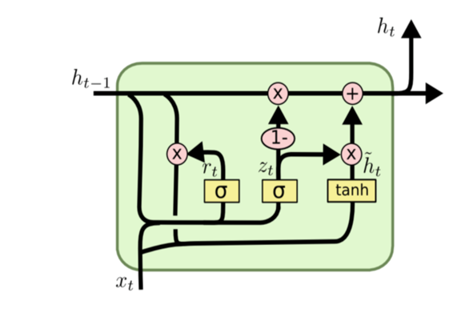
具体计算公式如下：
\[
\begin{align*}
z_t &= \sigma\left( W_z \cdot \left[ h_{t-1}, x_t \right]\right) \\
r_t &= \sigma\left( W_r \cdot \left[ h_{t-1}, x_t \right]\right) \\
\tilde{h}_t &= \tanh\left( W \cdot \left[ r_t * h_{t-1}, x_t \right]\right) \\
h_t &= (1-z_t) * h_{t-1} + z_t * \tilde{h}_t
\end{align*}
\]
本质上，GRU 和 LSTM 是相同的，将上一时刻 \(t-1\) 的输出和当前 \(t\) 时刻的输入 \(x_t\) 结合起来计算各种衰减系数，略微不同的是，线性变换没有使用偏置，由于记忆状态也是 \(h_{t-1}\)，所以直接对它进行更新就可以了，最后输出网络的结果 \(h_t\)，这个结果也是网络的记忆状态。
2. Text Classification
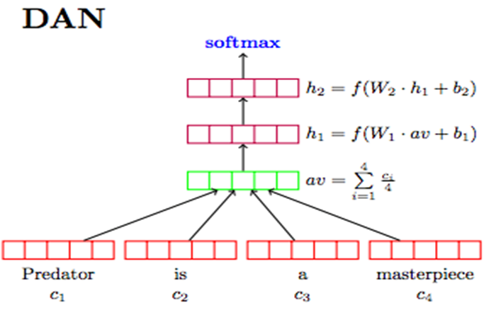